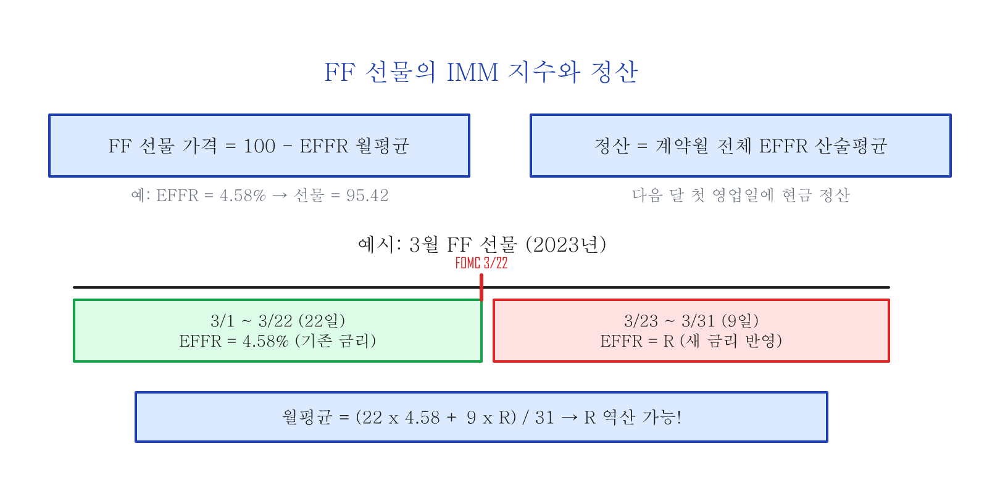
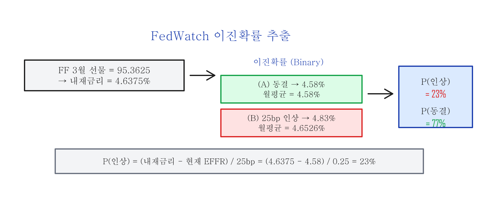

Fed Fund 선물과 CME FedWatch Tool — 금리 예측의 원리¶
Part 1: FF(Federal Funds) 선물과 EFFR¶
FOMC(Federal Open Market Committee: 미국 연방공개시장위원회)에서 금리를 올릴지 내릴지 — 이것은 주식, 채권, 환율 모두에 영향을 미치는 가장 중요한 변수입니다. 시장 참여자들이 금리 방향을 어떻게 예측하는지를 보여주는 도구가 바로 FF 선물과 FedWatch Tool입니다.
FF 선물이란¶
미국 최대 선물/옵션 거래소인 CME(Chicago Mercantile Exchange) 그룹에서 티커명 ZQ인 30 Day Federal Funds 선물을 상장하여 거래를 주관합니다.
| 항목 | 내용 |
|---|---|
| 계약 단위 | $5,000,000 (선물 1계약이 대표하는 명목 금액) |
| 가격 방식 | 금리를 가격으로 바꾸는 계산법인 IMM(International Monetary Market) 지수 |
| 정산 | 해당 계약월의 모든 영업일 EFFR 산술평균으로 현금 정산 |
FF 선물의 가격은 CME에서 자체 개발한 IMM 지수 방식으로 계산합니다:
FF 선물 가격 = 100 - (계약월 EFFR 산술평균)
예를 들어 EFFR이 4.58%이면, FF 선물 가격은 IMM 지수로 95.42 (100 - 4.58)가 됩니다.
EFFR (Effective Federal Funds Rate)¶
EFFR은 미국 은행끼리 하루짜리 돈을 빌릴 때 실제로 적용되는 금리 — 이것이 실효 연방기금금리(Effective Federal Funds Rate)입니다. Fed의 뉴욕 연방준비은행(FRBNY)에서 매일 공시하며, 전 거래일에 은행 등 예탁기관들(Depository institutions) 사이에서 성사된 담보 없는 하루짜리 초단기 대출(overnight unsecured loan) 이자율의 거래 규모가 큰 것에 더 비중을 두고 구한 대표값(거래량 가중 중앙값)으로 계산합니다.
EFFR은 뉴욕 연준 웹사이트(newyorkfed.org)에서 매일 확인할 수 있습니다.
FOMC 금리 결정과 EFFR의 관계¶
FOMC 회의에서 금리가 결정되면, 그 다음 영업일부터 EFFR에 반영됩니다:
| FOMC 회의 | 결정 | EFFR 변화 |
|---|---|---|
| 2022년 12월 13~14일 | 50bps(0.50%p) 인상 | 3.83% → 4.33% (12/15~) |
| 2023년 1월 31일~2월 1일 | 25bps(0.25%p) 인상 | 4.33% → 4.58% (2/2~) |
| 2023년 3월 21~22일 | 25bps(0.25%p) 인상 | 4.58% → 4.83% (3/23~) |
bps(basis point)란? 1bp = 0.01%p. 즉 25bps = 0.25%p, 50bps = 0.50%p 입니다.
FF 선물의 정산과 내재금리¶
FF 선물의 정산은 해당 계약월의 다음 달 첫 날에, 계약월 동안의 모든 영업일 EFFR 산술평균을 계산하여 현금 정산합니다.

FF 선물의 가격에는 해당 계약월 동안 EFFR에 대한 시장의 기대치가 반영되어 있습니다. 한 계약당 $5,000,000인 FF 선물을 거래하는 큰 손들은 부지런히 금리를 예측하여 FF 선물의 예상 가격 기준을 세우고 거래합니다.
FOMC 회의에서 결정되는 금리는 해당 월 FF 선물의 정산가격에 영향을 미치며, 이후 모든 FF 선물계약의 가격을 결정합니다. 따라서 FF 선물 가격에는 트레이더들의 금리 예측이 반영됩니다 — 정산은 실제 EFFR 평균으로 하지만, 만기 전에 거래되는 선물 가격에는 미래 금리에 대한 예측이 녹아 있는 것입니다. 이 선물 가격 안에 '숨어있는' 금리 예상치를 내재금리(Implied Rate)라고 합니다.
Part 2: CME FedWatch Tool의 금리 예측¶
FedWatch Tool이란¶
CME 그룹은 FF 선물 가격을 바탕으로 FOMC 회의에서 결정되는 금리에 대한 시장 참여자들의 기대치를 반영하는 FedWatch Tool을 제공합니다. FedWatch Tool은 CME 웹사이트(cmegroup.com/markets/interest-rates/cme-fedwatch-tool.html)에서 무료로 확인할 수 있습니다.
FedWatch Tool은 내부적으로 동전 던지기처럼 두 가지 결과(인상 or 동결)만 놓고 확률을 나누는 방식인 이진확률트리(Binary probability tree)를 사용하여 최종 금리의 확률을 예측합니다.
내재금리에서 확률 추출하기¶
실제 사례로 확인해 봅니다. 시간을 2023년 3월 20일로 돌려봅니다. 다음 날인 3월 21일 FOMC 회의의 금리 결정을 아직 알 수 없는 상태입니다. 또한 새로 결정될 금리는 FOMC 회의 다음 날인 3월 23일부터 EFFR에 반영됩니다.
3월 20일 기준으로 FF 3월 선물계약(ZQH3)의 가격은 95.3625였습니다. 여기서 100을 빼면 월평균 내재금리 4.6375%가 됩니다.
3월은 31일인데, FOMC 이전 22일은 금리가 확정이고, FOMC 이후 9일만 새 금리가 적용됩니다. 31일 중 9일만 변수 — 이 비중을 이용해서 역산하는 것이 핵심 아이디어입니다.
계산 과정 펼치기
3월 1일부터 3월 22일까지 22일 동안의 EFFR은 계산의 편의상 모두 4.58%라고 가정합니다. FOMC 이후 갱신될 EFFR을 R이라고 정의하면:월평균 내재금리 = (22일 x 4.58 + 9일 x R) / 31일
각 시나리오별 내재금리:
| 시나리오 | R (FOMC 후 EFFR) | 월평균 내재금리 |
|---|---|---|
| (A) 금리 동결 | 4.58% | 4.58% |
| (B-1) 25bps 인상 | 4.83% | 4.6526% |
| (B-2) 50bps 인상 | 5.08% | 4.7252% |
| (C) 25bps 인하 | 4.33% | 4.5074% |
실제 월평균 내재금리 4.6375%는 (A) 금리 동결(4.58%)과 (B-1) 25bps 인상(4.6526%) 사이의 값입니다. 금리시장의 트레이더들이 3월 FOMC에서 "금리 동결"과 "25bps 인상"의 두 가지 가능성을 보고 있다는 것을 암시합니다. (이진확률, Binary probability)
확률 계산¶

FFER Start = 4.58%
내재금리 (Implied Rate) = 4.6375%
25bps 금리 인상 확률:
확률 공식 유도 펼치기
P(인상) = (내재금리 - FFER Start) / 25bps
= (4.6375 - 4.58) / 0.25
= 0.0575 / 0.25
= 23%
P(동결) = 1 - P(인상) = 1 - 23% = 77%
즉 내재금리가 현재 금리에서 25bps 구간의 23% 지점에 있다는 뜻입니다. 0%면 동결 확실, 100%면 인상 확실 — 23%면 "인상 가능성은 있지만 동결 쪽에 훨씬 무게"입니다.
3월 20일 기준으로 금리시장 참여자들은 3월 FOMC에서 금리 동결 77%, 25bps 인상 23%의 확률을 보고 있었습니다.
정리¶
| 개념 | 핵심 |
|---|---|
| EFFR | 뉴욕 연준이 매일 공시하는 실효 연방기금금리 (거래량 가중 중앙값) |
| FF 선물 | EFFR의 월평균에 대한 시장 기대치를 반영하는 선물 (티커: ZQ) |
| IMM 지수 | FF 선물 가격 = 100 - 월평균 EFFR |
| FedWatch Tool | FF 선물의 내재금리에서 이진확률트리로 FOMC 금리 결정 확률을 추출 |
FF 선물 가격 하나에서 FOMC 금리 결정의 확률을 역산할 수 있다는 것이 핵심입니다. 이 방법론을 여러 FOMC 회의에 걸쳐 연쇄적으로 적용하면, 향후 수개월간의 금리 경로 확률을 추출할 수 있습니다. 예를 들어 3월 FF 선물에서 3월 FOMC 확률을 구하고, 그 결과를 5월 FF 선물에 넣으면 5월 FOMC 확률도 구할 수 있습니다. 뉴스에서 "금리 인상 확률 90%"라고 할 때, 그 숫자가 바로 이 FF 선물에서 나온 것입니다.
FedWatch Tool은 CME 웹사이트에서 실시간으로 확인할 수 있으며, 금리 결정 전 시장 심리를 파악하는 데 유용합니다. 다만 FF 선물 가격은 실시간으로 변하므로, FedWatch 확률도 시시각각 변합니다 — 고정된 예측이 아니라 시장의 현재 컨센서스라는 점을 기억하세요.
이전 글: COT — 선물시장에서 현물시장 살펴보기